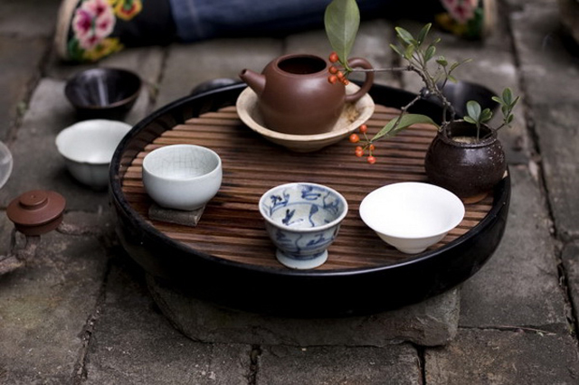

永安天宝岩茶业获福建三明首个茶业国家发明专利

近日，国家知识产权局授权公告了我市永安天宝岩茶业发展有限公司的“一种茶叶的加工工艺”发明专利，这是我市茶业获得的首个国家发明专利。
这个发明专利由天宝岩茶业发展有限公司、三明市茶叶技术推广站和永安市经作站，于2013年11月合作审报。国家知识产权局依据《中华人民共和国专利法》进行审查，颁发专利证，并在专利登记簿上给予登记，专利权限20年。
这个专利以高香型茶树品种为原料，结合了绿茶、乌龙茶、黄茶等三种茶类的加工特点，独创出一种新型的茶叶加工工艺，其品质特征具有绿茶的清雅、乌龙茶的花香、黄茶的甘爽，受到消费者的赞誉，因与永安竹乡相得益彰，又被称为“天宝岩竹茶”。